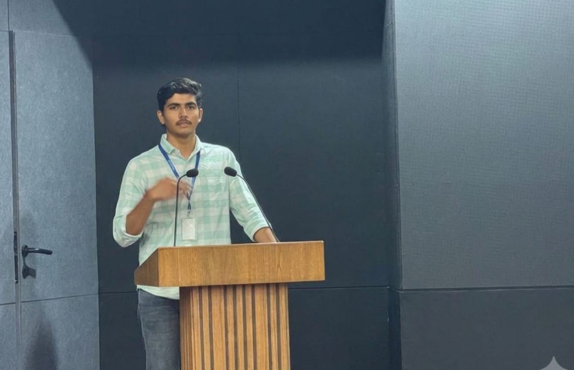

2026 — Present
Indian Institute of Management Bangalore
BBA in Digital Business & Entrepreneurship. Exploring the intersection of business fundamentals, digital models and entrepreneurship.
Undergraduate programmeI’m a business student at IIM Bangalore. I’m interested in how people choose products, how brands earn trust, and what it takes to turn a rough idea into a working business.
CURRENTLY IN AHMEDABAD, INDIA

The questions behind a business interest me as much as the business itself.
I’m pursuing a BBA in Digital Business & Entrepreneurship at IIM Bangalore. My interest is in the practical side of business: understanding customers, finding a clear position in the market, communicating value and making the numbers work.
I usually learn by pulling ideas apart. I look at everyday products and ask why someone buys them, what makes one brand stand out, and where a better experience might be possible. I’m especially drawn to entrepreneurship and marketing because both demand a mix of observation, clear thinking and execution.
This site is a record of what I’m learning and experimenting with—not a list of things I’m claiming to have mastered.
A straightforward timeline of my education and the responsibilities that have shaped it.
BBA in Digital Business & Entrepreneurship. Exploring the intersection of business fundamentals, digital models and entrepreneurship.
Undergraduate programmeServed as Head Boy at my school in Bakewar, Etawah. The role gave me first-hand experience of responsibility, coordination and communicating with people.
Bakewar · Etawah, Uttar PradeshStudied Commerce without Mathematics, building an academic base in business and related subjects.
Lord Mother Senior Secondary SchoolFollowing brands, business models and new ventures—and keeping notes on ideas that could solve ordinary problems.
An ongoing habit, not a qualificationThese are concepts and areas I’m exploring. I’ve kept the descriptions honest about what is still in progress.
A tea brand concept built around an everyday product. Exploring how product range, packaging, pricing and distribution can work together across rural and urban markets.
Concept developmentThinking through a simple online marketplace: product discovery, seller onboarding, payments and the small frictions that can make or break a buying experience.
Research & explorationObserving positioning, packaging, pricing and customer trust. The aim is to understand what makes a product feel relevant—not just how to make an advertisement.
Ongoing learningA small website to put my interests, education and current experiments in one place. Built as a practical exercise in presenting information clearly.
Built with HTML, CSS & JavaScriptThese are interests I’m actively developing, not a claim of expertise.
I like examining how an idea moves from a problem to a product, and then from a product to a sustainable business.
I’m interested in conversations around business, marketing, entrepreneurship and ideas worth testing. If that sounds like your kind of conversation, feel free to reach out.
Email me